第24天：中间代码的窥孔优化
第24天：中间代码的窥孔优化
发现规律
请看下面的代码
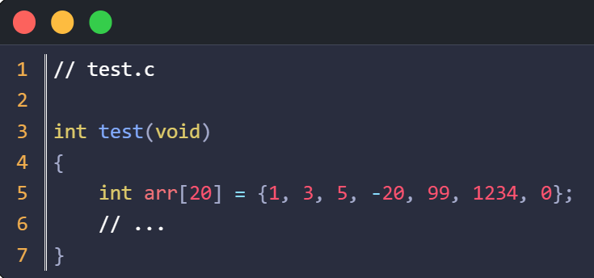
对于第 5 行的数组初始化，我们生成的汇编代码是这样的：
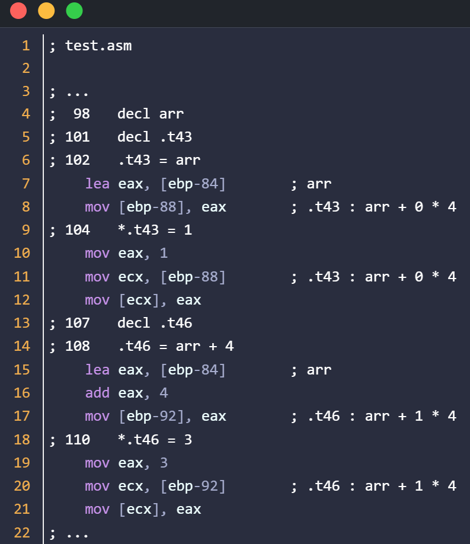
我先为读者分析这些代码是什么意思。
幸亏插入了中间指令，不然看着这些汇编指令我也头晕。
第 4 行的注释是 .t43 = arr
提示我们第 5~6 行是把数组 arr 的首元素的地址赋值给 .t43
第 5 行的 ebp-84，是为数组 arr 分配的栈偏移，也是数组 arr 首元素的地址；我是怎么知道的？因为第 5 行后面有注释，对应的代码是 __load_var_to_reg 函数。
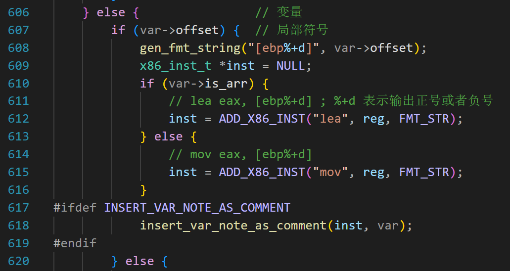
第 618 行，我把局部变量的注释加到了 lea 或者 mov 指令的后面，这个 insert… 函数就不介绍了。
继续看汇编代码，第 5 行，把 ebp-84 的值（数组 arr 首元素的地址）给了 eax;
第 6 行，把 eax 的值写入内存 [ebp-88];
而 ebp-88 对应中间变量 .t43 在栈上的偏移;
所以，第 5~6 行，完成了 .t43 = arr 这句赋值。
第 7 行的注释是 “*.t43 = 1”
所以，8~10 行，应该是给 .t43 指向的内存写入 1；
第 9 行，mov ecx, [ebp-88]；
就是把 .t43 的值给 ecx;
.t43 的值是 arr，所以就是 ecx 等于 arr;
第 10 行，把 1 写入 ecx 指向的内存，其实就是修改以 arr 为起始地址的 4 个字节，改成 1;
所以这 5 行汇编指令，完成了“ arr[0] = 1 ” 这句 C 代码所做的工作。
先不问您听着累不累，我讲得都累了，实在是绕啊。
同理,
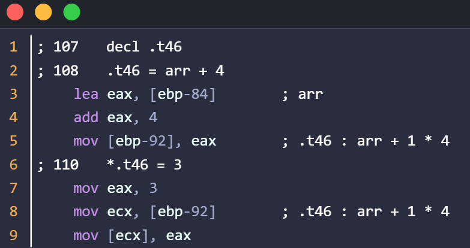
上面一共 6 行汇编指令，完成了 “ arr[1] = 3 ” 这句 C 代码所做的工作。
分析起来和上面的长篇大论差不多，唯一不同的是第 4 行，给 eax 增加了 4，因为要访问下一个元素，所以偏移增加 4 个字节。
我就琢磨类似的汇编指令能不能精简一下，不但能给 CPU 省点事，关键是我们读起来也轻松啊。
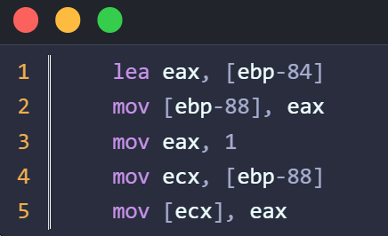
仔细看这 5 条指令，用窥孔优化好像不合适，似乎没有什么显而易见的特征。
那怎么办？
我们把 test.asm 中的注释，也就是中间指令抽取出来。
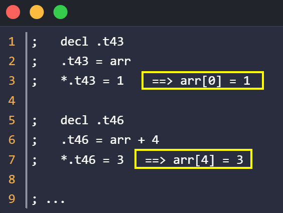
上图第 1~3 行，意思很明显，因为 arr 是 int 类型的数组，所以就是给 arr 代表的地址（连续4个字节）写 1；
我们简写为 arr[0] = 1;
同理，上图第 6~7 行，就是给 arr+4 代表的地址（连续4个字节）写 3；
我们简写为 arr[4] = 3;
但是要注意，这样的写法和 C 还是有区别。
例如中间指令 arr[4] = 3; 这里的 4 就是偏移 4 个字节；
而 C 代码写法是 arr[1] = 3; 这里的 1 代表偏移 4 个字节；
所以中间指令中的 arr 就是一个地址，不是 C 语言的指针；
中间指令的 [] 中的值就是偏移，单位是字节；
arr 代表的地址是多少呢？
查符号表，arr 的 offset 是 -84，所以 arr 这个数组的起始地址就是 ebp - 84；
所以中间指令 arr[0] = 1; 翻译成汇编就是 mov [ebp-84], 1；
同理，对于中间指令 arr[4] = 3;
先计算 ebp - 84 + 4 = ebp-80；
所以翻译成汇编就是 mov [ebp-80] , 3；
总结一下：对于下面的汇编指令，读起来非常费劲，且不容易优化
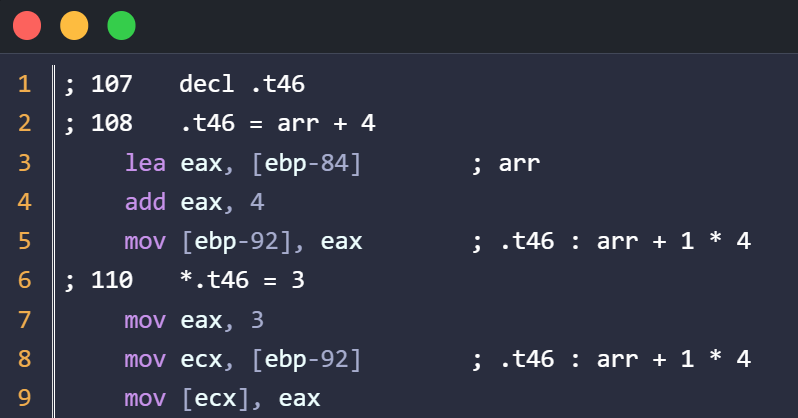
但是，生成这 6 条指令的中间指令是有明显规律的
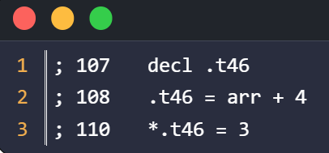
这三条中间指令，如果直接翻译，就会得到上面的 6 条汇编指令；
现在把这三条中间指令，优化为 arr[4] = 3；这是一条新的中间指令；
在生成汇编代码阶段，根据 arr 的栈偏移，我们把它翻译成 mov dword [ebp-80] , 3
等于说原来 6 条汇编指令，现在一条就搞定！
既然有写数组，那就有读数组。
请看下面的代码
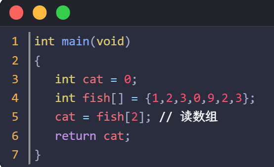
以上 C 代码翻译成汇编是
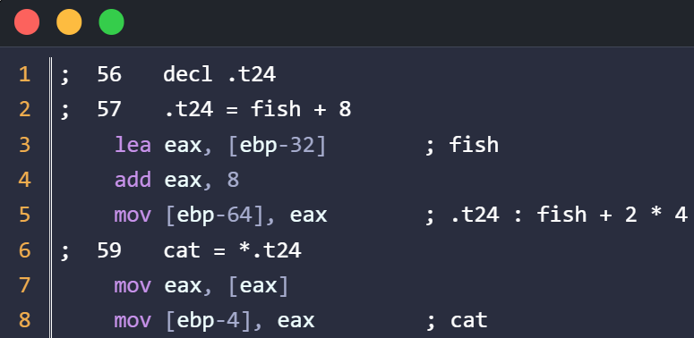
第 3 行，ebp-32 是数组 fish 的起始地址；
第 4 行，把起始地址加 8，也就是要访问 fish[2]，此时 eax 就是 fish + 8；
因为 fish 的偏移地址是 ebp-32，所以 eax 的值是 ebp - 24；
第 7 行，读出 fish[2]，存入 eax；
第 8 行，把 eax 的值存入 cat 变量；
同样，提取上图汇编代码的中间代码
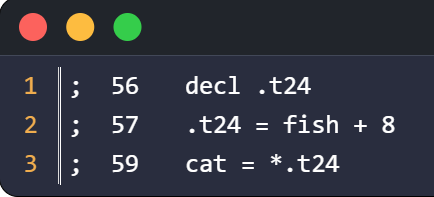
可以化简为中间指令 cat = fish[8]
在生成汇编代码的时候，这条中间指令被翻译为
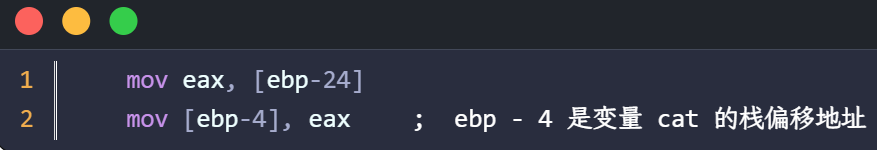
ebp-24 是因为 ebp-32 是数组 fish 的起始地址， ebp-32+8 = ebp-24
之前的 5 条汇编指令，变成了 2 条汇编指令。
到此，目标已经明确。我们要做的是：
- 创建新的中间指令，可以表达 arr[4] = 3； cat = fish[8];
- 对中间代码做窥孔优化，识别上面的模式，优化为新的中间指令
- 修改 to_intel_32_asm 函数，把新的中间指令翻译为汇编代码
增加中间指令
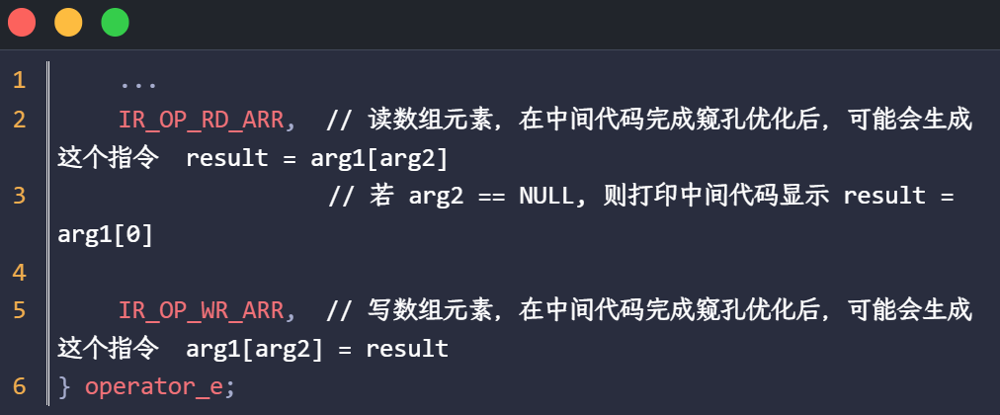
增加 IR_OP_RD_ARR 和 IR_OP_WR_ARR 这 2 个运算符。
IR_OP_RD_ARR，读数组元素，用到 arg1 和 result，可能用到 arg2
执行的操作是 result = *(arg1 + arg2);
arg1 是数组的名字，arg2 是偏移；
当 arg2 为 NULL 时，执行的操作是 result = *(arg1);
IR_OP_WR_ARR，写数组元素，用到 arg1 和 result，可能用到 arg2
执行的操作是 *(arg1 + arg2) = result；
arg1 是数组的名字，arg2 是偏移；
当 arg2 为 NULL 时，执行的操作是 *(arg1) = result；
窥孔优化
需要优化的中间指令形如：
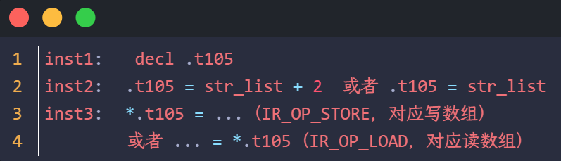
特征总结：
inst1 中 是 IR_OP_DECL 运算，假设 arg1 是 elemt；
inst2 满足下面其中 1 个条件就行；
- 是赋值运算（IR_OP_ASSIGN），result 是 elemt，arg1 是数组
- 是加法（IR_OP_ADD）或者减法（IR_OP_SUB）运算； result 是 elemt，且 arg1 和 arg2 其中一个是数组，一个是常量
inst3 中， arg1 是 elemt；是 IR_OP_LOAD 或者 IR_OP_STORE 操作
以上特征，我们列一个表格，这样看代码方便一些
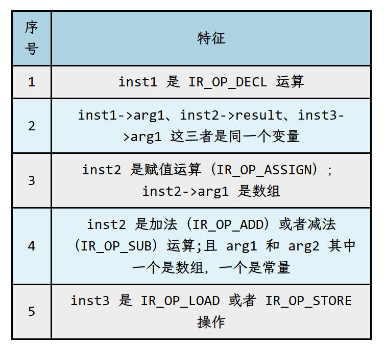
必须满足特征 1，2，3，5；或者 1，2，4，5
下面我们看特征识别的代码。
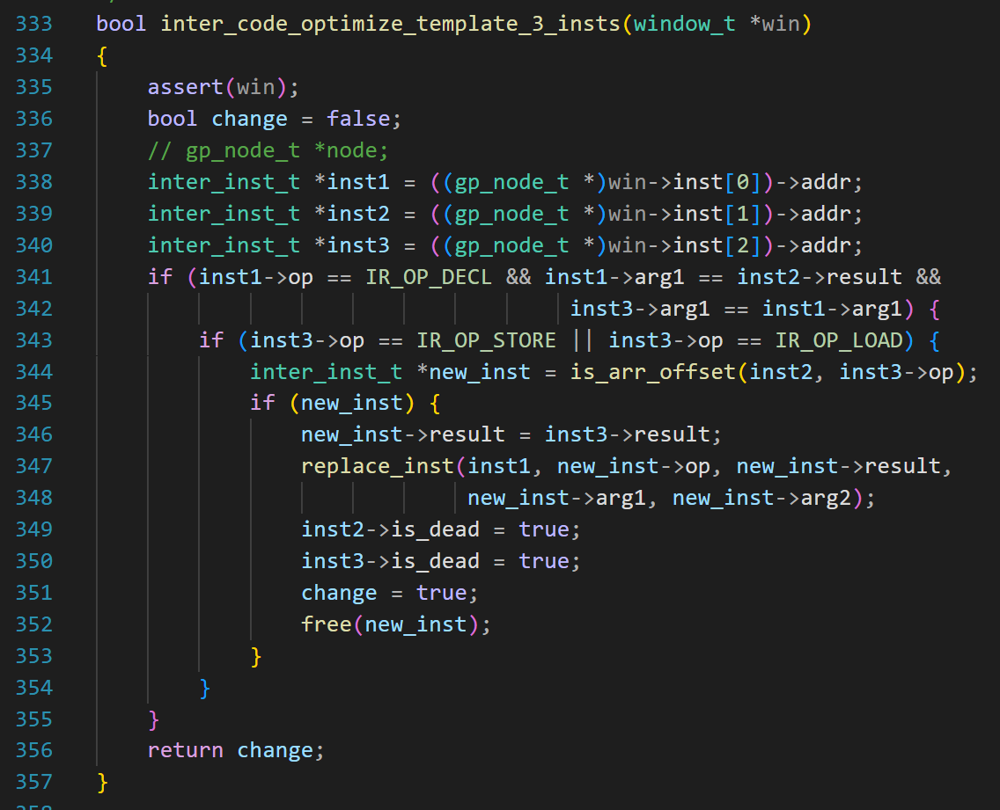
第 341~342 行，表示已经满足特征 1 和 2；
第 343 行，表示满足特征 5；
第 344 行，会调用 is_arr_offset 做进一步的判断，看是否满足 3 或者 4.
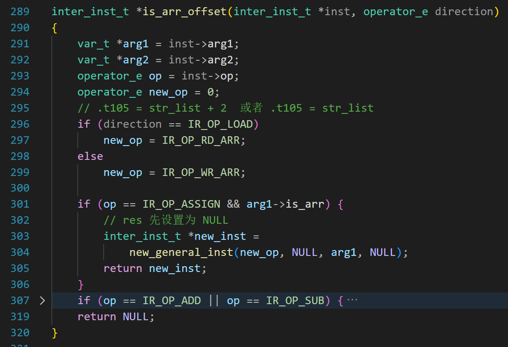
第 296~299 行根据参数判断是读数组还是写数组；
第 301 行处理没有偏移（arg2 等于 NULL）的情况，也就是满足特征 3；
第 303 行生成指令；
我们复习一下 new_general_inst 函数的参数
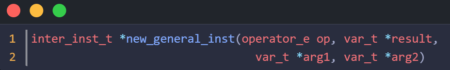
第 1 个参数是 IR_OP_RD_ARR 或 IR_OP_WR_ARR；
第 2 个参数是 result,先设置为 NULL，后面再填充；
第 3 个参数来自 inst2->arg1，表示某个数组；
第 4 个参数不需要；
展开第 307 行
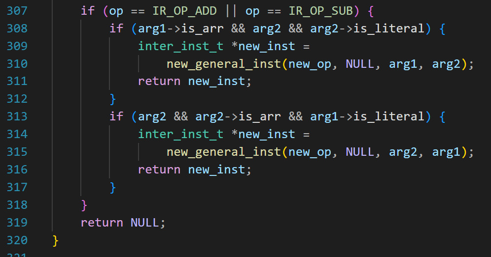
第 307 要求必须是加法或者减法；
第 308 和 313 要求 arg1 和 arg2 中一个是数组，一个是常量，也就是满足特征 4；
和上面不一样的是第四个参数不是 NULL，而是一个常量，表示偏移；
再回到刚才的代码。

第 344 行，如果 is_arr_offset 函数的返回值不是 NULL，说明满足优化的特征。
第 346，设置 result 参数，result 来自 inst3->result，就是下面例子中的 “…”
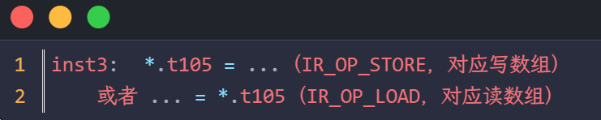
第 347，把 inst1 替换为 new_inst；
第 349~350，把 inst2、inst3 都标记为死指令。
不需要调整 begin 的位置，inter_code_move_and_fill_window(win, 1) 会把 begin 移动到下一个有效位置，因为 inst2、inst3 都标记为死指令了，所以下一个有效位置是 inst4。
把新的中间指令翻译为汇编代码
打印中间指令的函数也要增加以下代码：
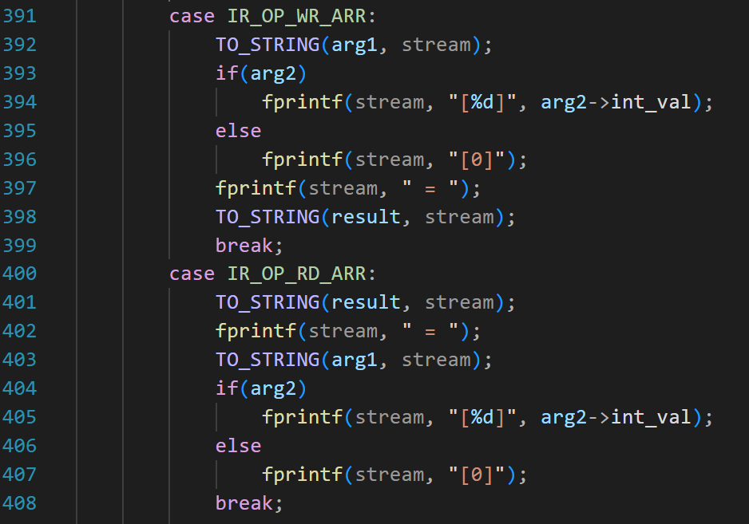
第 393 ~ 396，如果没有偏移（arg2 == NULL），则显示[0]；
下面的代码是对中间指令 IR_OP_WR_ARR 的翻译：
把 arg1[arg2] = res 翻译成汇编指令。
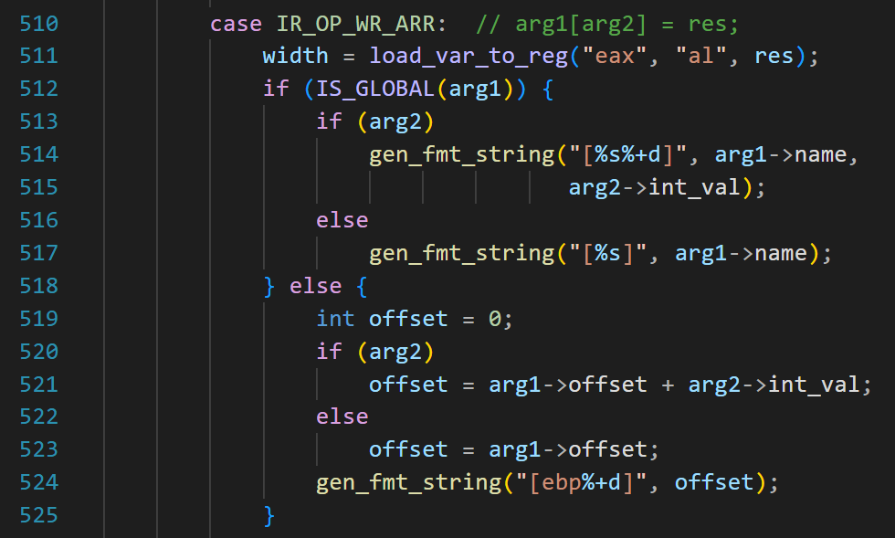
第 511 行，加载 res 到寄存器；
注意，如果 res 是常量，对汇编指令做窥孔优化的时候，就会删除这条指令（形如 mov eax, 100）；
如果 arg1 是全局变量，那么翻译成汇编指令形如
mov [var_g + 20], …
var_g 是 arg1->name;
+20 是偏移量，由 arg2 提供;
如果 arg2 == NULL，说明偏移为 0，翻译为
mov [var_g], …
第 518~525，如果 arg1 是局部变量
1）arg2 不为 NULL，则用数组的起始地址（ebp - ?）加上 arg2 代表的偏移
2）若 arg2 == NULL，说明偏于为 0，[ ] 内是数组的起始地址
不管哪一种请看，翻译后形如 mov [ebp - ??], …
代码还没有完:
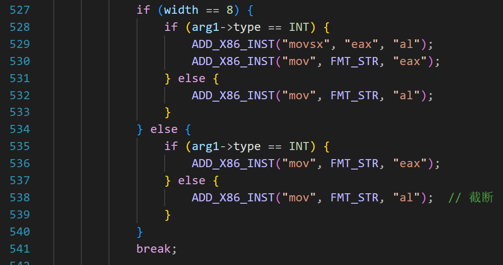
因为 arg1 是指针，还需要考虑它的类型和 res 的类型;
分成四种情况
-
res 是字符类型，arg1 是
int *那就把 al 做带符号扩展；再写入 arg1[arg2]，对应 529~530
-
res 是字符类型，arg1 是
char *直接把 al 写入 arg1[arg2]，对应 532 行
-
res 是 int，arg1 是
int *,把 eax 写入 arg1[arg2]，对应 536 行 -
res 是 int, arg1 是
char *, 把 al 写入 arg1[arg2]，对应 538 行
下面看读数组的代码
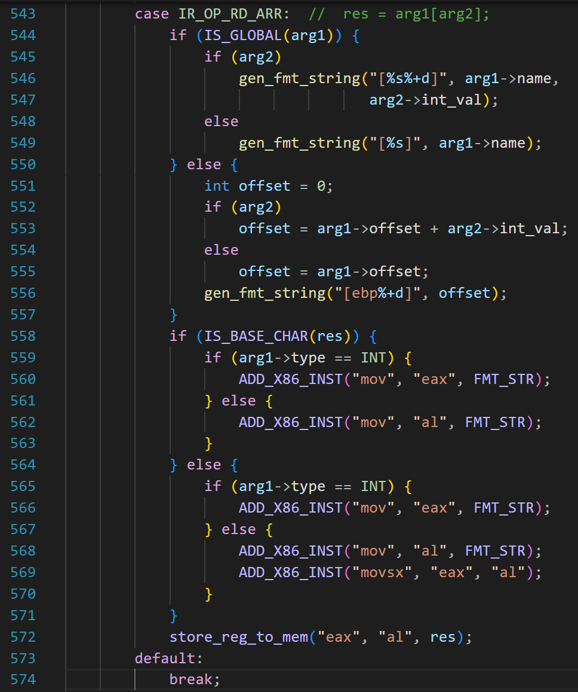
544 ~ 557 是为了生成 […]（作为源操作数），和上面代码类似，不用解释。
同理，因为 arg1 是指针，需要考虑它的类型和 res 的类型也是分成 4 种情况。
-
res 是 char, arg1 是
int*
先把 arg1[arg2] 读到 eax,再把 al 写入 res； 对应代码第 560 和 572； -
res 是 char， arg1 是
char *
把 arg1[arg2] 读到 al，再把 al 写入 res； 对应代码第 562 和 572； -
res 是 int, arg1 是
int*
把 arg1[arg2] 读到 eax，再把 eax 写入 res；对应代码第 566 和 572； -
res 是 int, arg1 是
char*
把 arg1[arg2] 读到 al，再把 al 带符号扩展到 eax,最后把 eax 写入 res；对应代码第 568、569 和 572；
成果展示
测试代码如下：
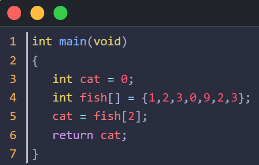
以上 C 代码，针对中间指令做与不做窥孔优化，生成的汇编指令差异很大。
直接上图。
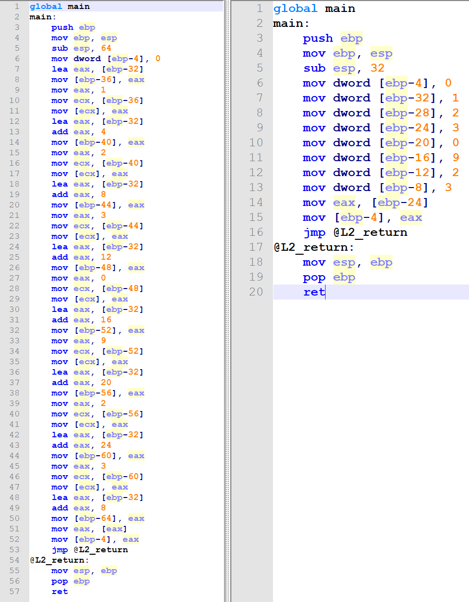
可以发现，左边的代码冗长无比，右边的代码十分清爽。
本文到这里就结束了。下节课我们学习针对汇编语言的词法分析。